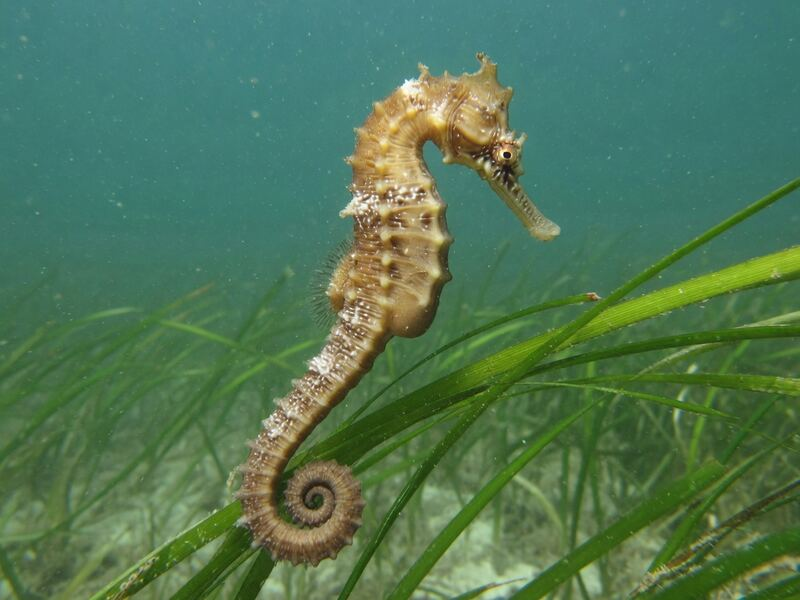

物理5–11 岁约 10 分钟
藏进海草才看不见，游到空地就被发现？
同一只纸海龙。藏进海草，叶子才像草，看不见；游到空地，叶子再多也被发现。差在藏在哪，不在叶子当不当桨，也不在尾巴卷不卷。本页不捞缸里、海里的真海龙，观察后洗手。
同一只纸龙，海草里藏一回，空地里游一回


藏进海草才看不见。游到空地就被发现。先点「藏进海草」，再点「试一试」。
先猜一猜，再试
第 1 题：藏 80，身子埋进海草，看不见吗？
押一个。把藏调到 80，再点试一试。
第 2 题：藏 10，身子游到空地，还看不见吗？
押好后藏 10，再试一试。
第 3 题：藏 50，刚好一半，算藏住了吗？
押好后藏 50，再试一试。
同一只纸龙：藏进海草才看不见；游到空地就被发现
先点「藏进海草」再点「试一试」，看埋进草里、叶子接上海草。再点「空地」试一次，看是不是身子停在空水里、一下子就被发现。
纸龙始终是同一只。差在藏在哪，不在叶子当不当桨——叶子几乎不划水。也不在尾巴卷不卷——那是海马自己的账。藏够才把叶子接到草上，游到空地就把草漏掉。
舞台上的「看不见」是本页比较尺子：藏 ≥ 80 才算藏进海草。刚好 50 还不够，会停在半中间。不捞缸里、海里的真海龙，不从水族箱拿走，观察后洗手。本页用纸板。
伪装图鉴
下面有 12 张卡。点一张，对照舞台：谁让藏进海草才看不见，谁让游到空地就被发现。
点一张图鉴，对照为什么藏进海草才看不见。
猜一猜
同一只纸海龙要看不见，靠的是藏进海草，还是叶子当桨划走？
先押一个，再点「看答案」。
任务：海草和空地都试
先把藏调到 80 或更高试一次，再调到 20 或更低试一次。两头都点过「试一试」即可完成。
开放式提示不会代替上面的正式任务。
尚未完成：先藏进海草试一次，或空地试一次。
同一只纸龙，先海草里试一次，再空地里试一次
舞台上只改一件事：藏得有多深。同一只纸龙，先藏进海草试一次，看埋不埋、叶子接不接得上草；再空地试一次，看是不是身子停在空水里、一下子就被发现。这样比，才知道看不见靠的是藏进海草，不是「叶子当桨」，也不是「卷尾巴就够」。
回家只带两句：「藏进海草才看不见」；「游到空地就被发现」。不要写成「叶子越多游得越快」。
藏够，台上叶子才接得上草，不是谁划得更快。
游到空地以后台上身子停在空水里，一下子就被发现。
叶子几乎不划水；本页比藏不藏，两句不要并成一句。
不捞缸里的、不带走野外的，本页用纸板对照。
这在教什么：孩子要能对海草和空地各报看不见或被发现，并否定「叶子当桨」和「卷尾巴就够」。
- 海草那一次，身子埋进去了吗？叶子接上海草了吗？
- 空地，台上还看不见吗？
- 本页要比海马卷尾巴吗？
- 能去捞缸里或海里的真海龙吗？
看不见靠藏进海草，不是叶子当桨，更不要去捞真海龙
身子埋进草里，叶子才接到海草上。这一藏只在够深时才成立。游到空地，眼前就剩空水。
不要把它讲成「叶子越多游得越快」或「卷住海草就算伪装」。海马自己卷尾当锚，零件不一样。小鳍划水比的是谁轻轻扇，也不是这一页。
不捞活龙，不从水族箱拿走，不从野外带走。看完按二十秒洗手。本页用纸板。
给家长的问题
- 海草那一次，孩子指的是身子和草，还是在说「它比较绿」？让他再指一次叶子和海草。
- 空地，为什么会被发现？哪一句四岁听得懂？
- 如果他说「叶子当桨就行」——划水是哪一笔账？本页少的是藏还是桨？
- 海马卷尾巴和叶海龙藏草，差在「卷住当锚」还是「长得像草」？
- 不捞活龙、不从缸里拿走、看完洗手：红线怎么说？本页能当捞龙课吗？
背后的原理
舞台上不写这些词，留给孩子用眼睛看。叶海龙的叶状皮瓣是皮肤长出来的伪装，几乎不提供推进；它也没有海马那种能卷住海草的尾巴。本页用藏 ≥ 80 当门槛，50 还不够，会停在半中间。
这不是划水说明书，也不是海马的卷尾摩擦。小鳍另开一笔，卷尾另开一页，都不要并进本页第一完成句。
人去捞活海龙、从缸里拿走、从野外带走，会伤害它。观察后洗手。舞台用纸板。
接下来可以去
带走句：藏进海草才看不见；游到空地就被发现。叶海龙观察站看真伪装；卷尾工坊看尾巴当锚，海马页看卷住海草。